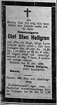
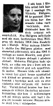

Personakt
Antavla
Vera Amalia Hällgren
* 1920-07-17 Sörböle 2, Skellefteå lfs, Skellefteå sn

Olof
Sten
Olofsson Hällgren
* 1874-01-08 Stenbrånet 1, Norsjö fs, Norsjö sn
† 1924-10-18 Sörböle 2, Skellefteå lfs, Skellefteå sn
Olof
Anton Olofsson Hällgren
* 1844-11-15 Kattisträsk, Norsjö fs, Norsjö sn
† 1903-03-25 Stenbråten 1, Norsjö fs, Norsjö sn
Olof Olofsson
* 1822-12-10 Kattisträsk 1, Norsjö fs, Norsjö sn
>>
Eva Johanna Larsdotter
* 1823-12-25 Risberg, Norsjö fs, Norsjö sn
>>
Emma Gustava Larsdotter
* 1845-08-29 Ristjäln, Norsjö fs, Norsjö sn
† 1881-03-06 Stenbrånet 1, Norsjö fs, Norsjö sn
Lars Larsson
* 1812-01-27 Risberg, Norsjö sn
† 1870-04-28 Ristjäln, Norsjö fs, Norsjö sn
>>
Margareta Katarina (Greta Kajsa) Olofsdotter
* 1818-07-14 Risliden, Norsjö fs, Norsjö sn
† 1903-04-01 Ristjäln, Norsjö fs, Norsjö sn
>>

Maria
Viktoria
Lindström
* 1881-08-23 Kattisträsk 2, Norsjö fs, Norsjö sn
† 1947-08-13 Sörböle 2, Skellefteå lfs, Skellefteå sn
Per Efraim Lindström
* 1847-12-15 Nybrännet, Burträsk sn
Per Ephraimsson Lindström
* 1819-11-19 Stavträsk, Burträsk fs, Burträsk sn
>>
Anna Maria Persdotter
* 1825-01-04 Kattisträsk 2, Liden, Norsjö fs, Norsjö sn
>>
Catharina Lovisa Andersdotter
* 1844-07-22 Ljusvattnet 9, Burträsk fs, Burträsk sn
Anders Johansson
* 1815-05-14 Ljusvattnet 9, Burträsk fs, Burträsk sn
>>
Eva Maria Andersdotter
* 1817-04-24 Ersmark 7, Håkarshemmanet, Skellefteå sn
>>
<< Startsida
{kind=link}
{kind=link}